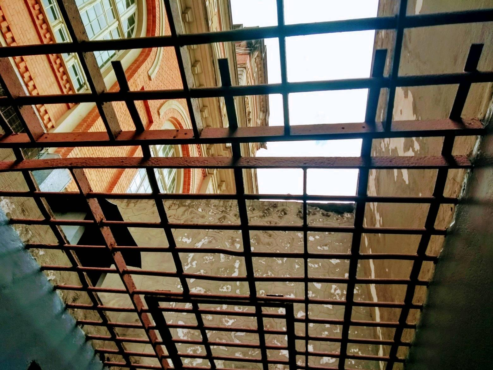
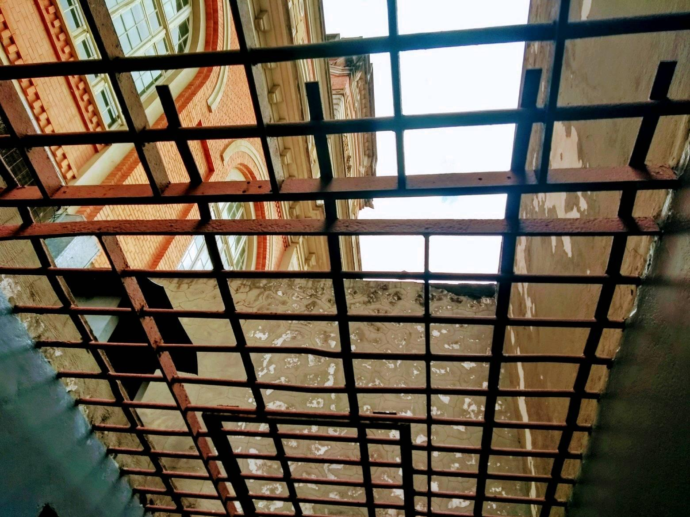

Técnica em Animação e Designer (Dezembro de 2011), pelo Instituto Criar de TV Cinema e Novas Mídias, participou das oficinas socioculturais: Comunicação: conceitos, processos e meios; Criatividade e Desenvolvimento pessoal; Projeto e Trabalho de Vida; Percepção, observação e criticidade; História e linguagem do audiovisual; Projeto e Ação Social: realização de intervenções transformadoras utilizando o audiovisual como ferramenta.
Nas habiliades específicas estudou: Produção de desenhos animados, story-board, desenho, intervalação, clean- up, escaneamento, colorização e finalização.
Fez parte do programa de formação em artes visuais Entreolhares Universitário do Itaú Cultural que ao longo de três semanas contempla saberes diversos entre fundamentos, estruturas e dinâmicas, que convergem na elaboração de um projeto artístico. Entre os tutores convidados estão nomes como Paulo Miyada, Leno Veras, Benjamin Seroussi, Ana Helena Curti e Stella Tedesco. Além do Itaú Cultural, a Casa do Povo e o Instituto Tomie Ohtake são espaços que foram estudados, o que reforça o objetivo de estimular o pensar e o criar por meio de experiências que dialogam com a arte contemporânea.
Gestora Cultural e Captadora de Recursos na Aldeia do Futuro (2017 - Atual)
Ganhadora do Edital para Programa de Apoio a Projetos Sociais na Fundação Salvador Arena, com proposta de reforma e ampliação do curso de Gastronomia no valor total de 120 mil reais.
Ampliou o acesso a cultura por meio do Teatro, com peças realizadas pela Lei Rouanet nº 8.313/1991 e PRONAC – Programa Nacional de Apoio à Cultura;
Ministrou aulas de Empreendedorismo, Educomunicação, Informática, Criatividade e Expressão e Inteligência Emocional.
Fotografia
 
